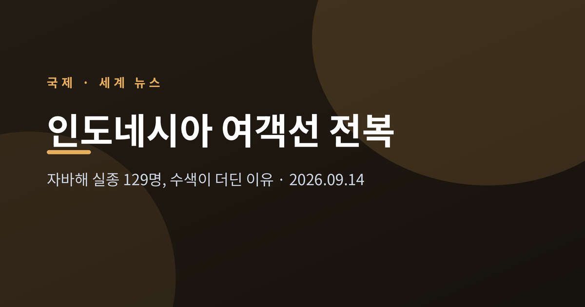
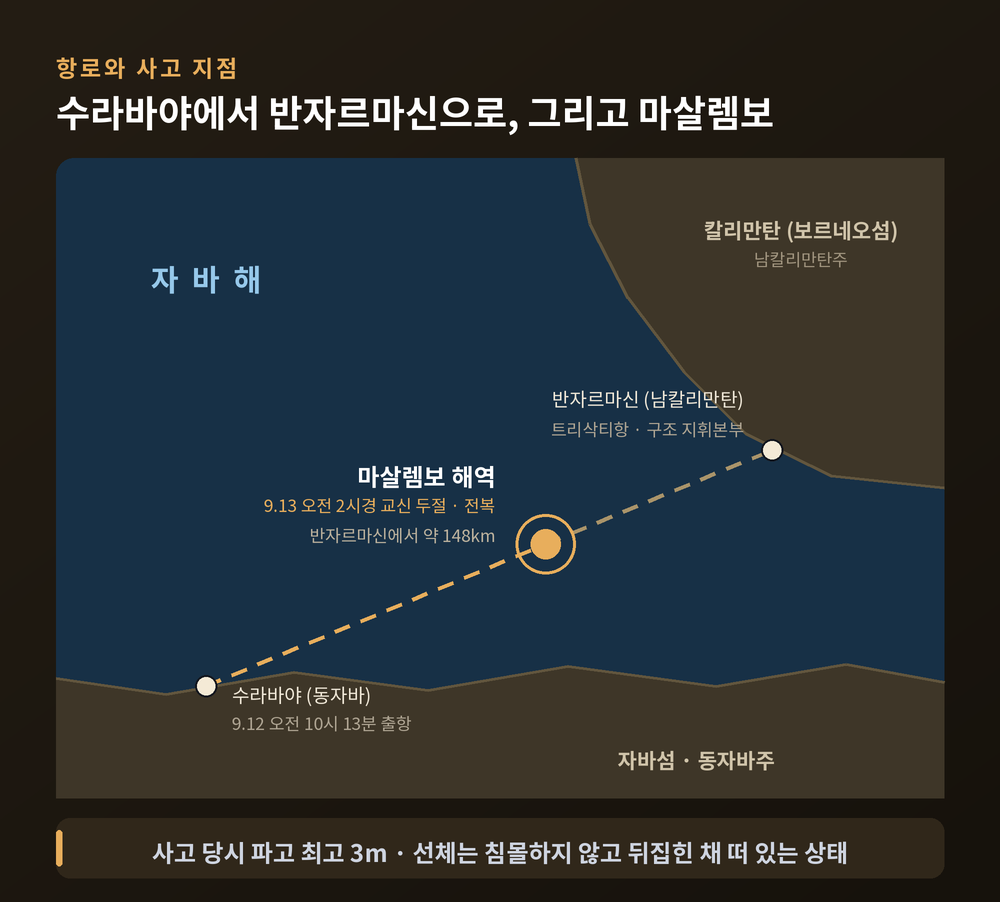
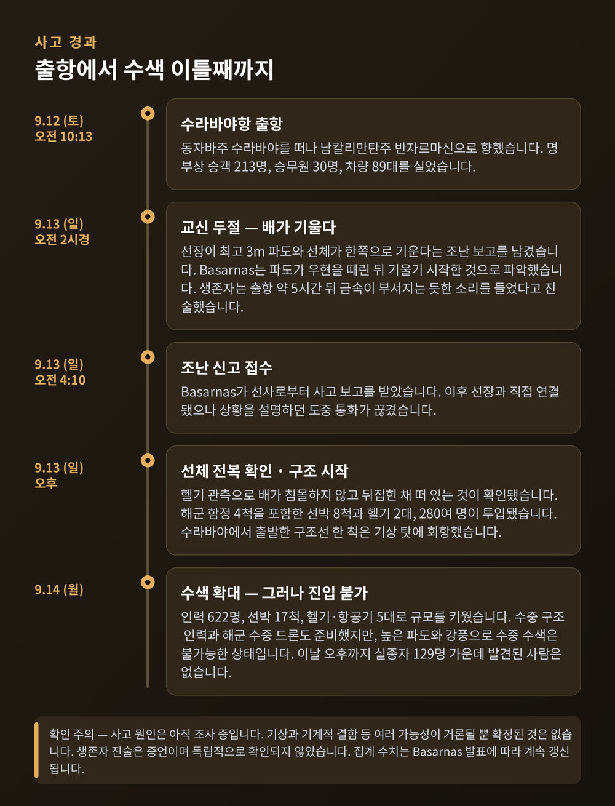
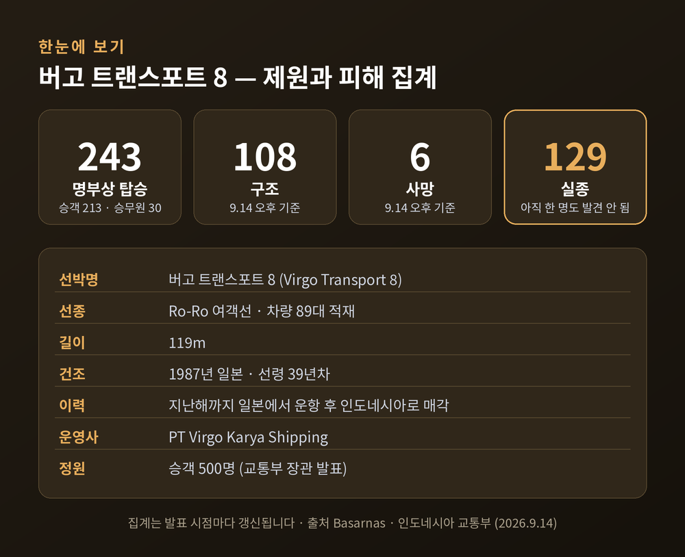
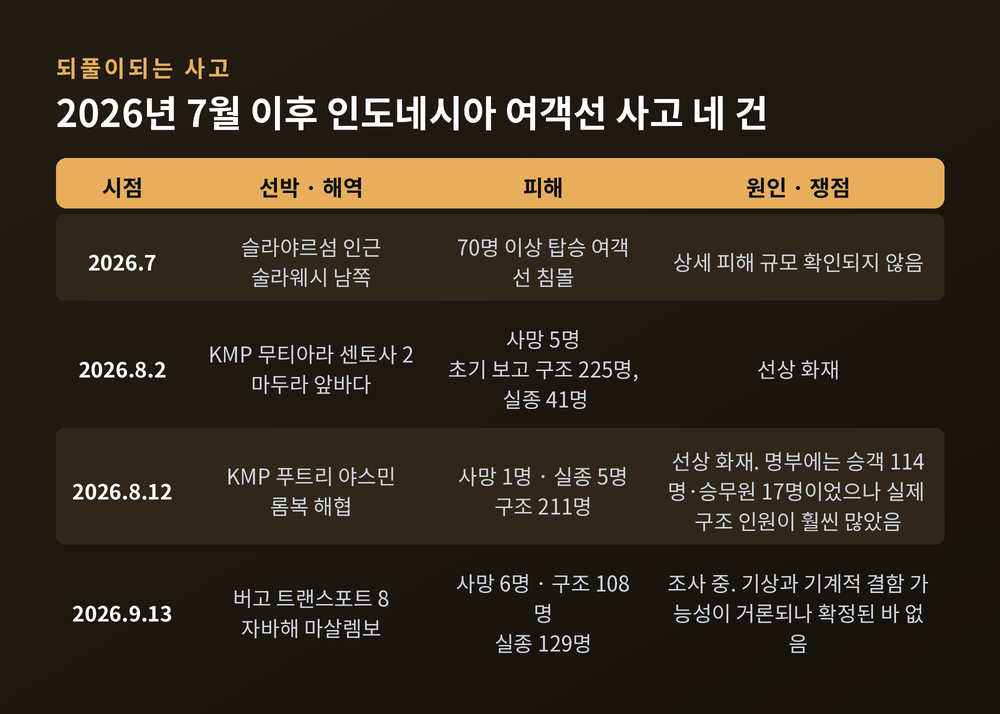
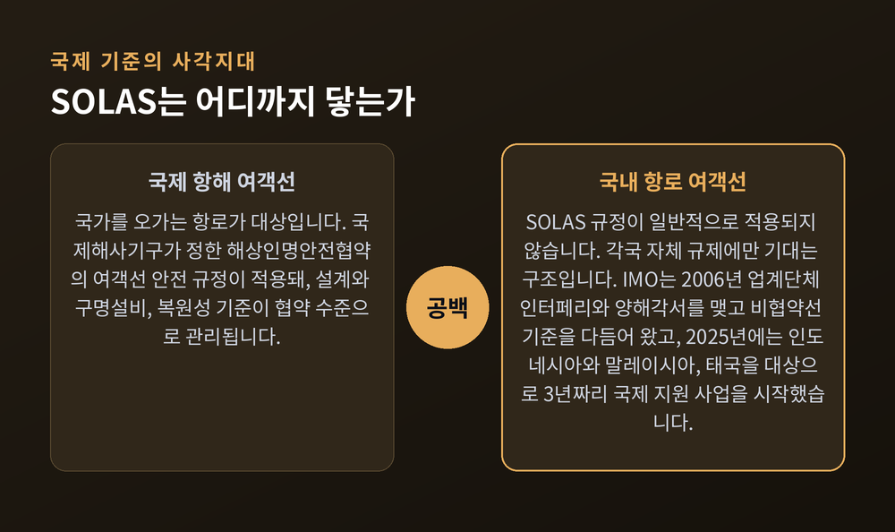
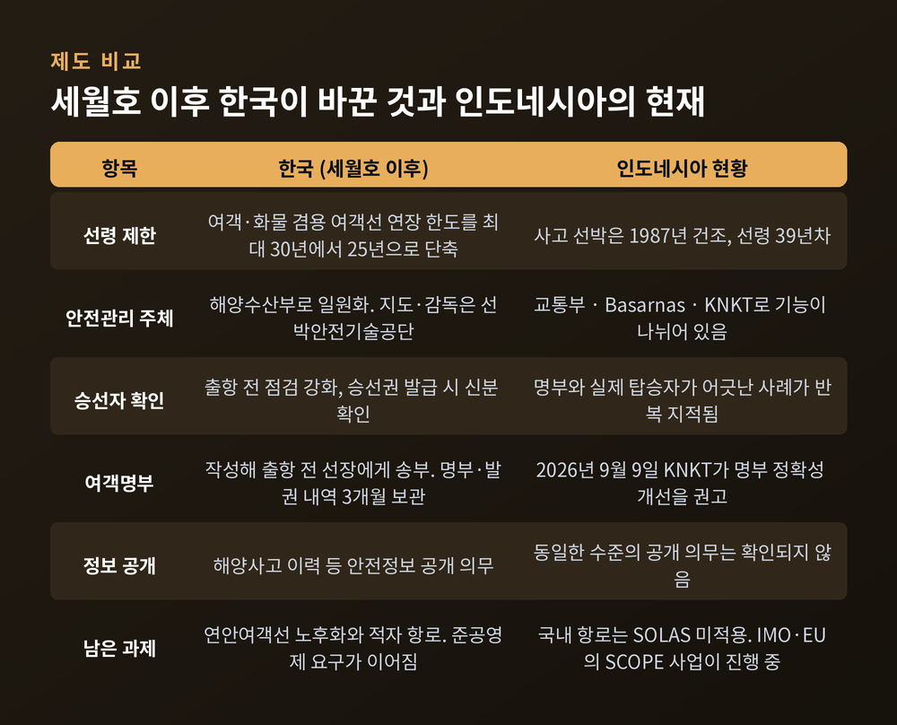

인도네시아 여객선 전복 사고, 자바해 실종 129명 수색이 어려운 이유

이번 글에서는 2026년 9월 13일 인도네시아 자바해에서 일어난 여객선 전복 사고를 정리해 보겠습니다. 무슨 일이 있었는지, 왜 수색이 이토록 더딘지, 그리고 이런 사고가 왜 되풀이되는지를 차례로 짚겠습니다. 아직 조사가 진행 중인 사안이라 확인된 사실과 확인되지 않은 주장을 구분해 적었습니다.
세 줄 요약
승객·승무원 243명을 태운 여객선 '버고 트랜스포트 8'이 자바해 마살렘보 해역에서 전복됐습니다.
9월 14일 오후 인도네시아 국가수색구조청(Basarnas) 발표 기준 사망 6명, 구조 108명, 실종 129명입니다.
선체는 가라앉지 않고 뒤집힌 채 떠 있지만, 3m에 이르는 파도 탓에 내부 진입이 막혀 있습니다.

■그날 밤 자바해에서 벌어진 일
사고 선박은 동자바주 수라바야를 떠나 남칼리만탄주 반자르마신으로 향하던 정기 여객선이었습니다.
출항은 9월 12일 토요일 현지시간 오전 10시 13분이었습니다. 자바섬과 보르네오섬을 잇는 야간 항해였습니다.
이튿날 오전 2시경 배와의 교신이 끊겼습니다. Basarnas는 오전 4시 10분 선사로부터 사고 보고를 받았고, 이후 선장과 직접 연결됐습니다. 그런데 선장이 상황을 설명하던 도중 통화가 끊겼습니다.
선장이 남긴 마지막 보고는 두 가지였습니다. 최고 3m 파도가 이는 거친 해상이라는 것, 그리고 배가 한쪽으로 기울고 있다는 것이었습니다. Basarnas는 파도가 배의 우현을 때린 뒤 기울기 시작한 것으로 파악했습니다.
사고 해역은 반자르마신에서 약 148km 떨어진 자바해 마살렘보 수역입니다. 거리는 매체마다 81해리, 93마일 등으로 조금씩 다르게 전해졌지만 대체로 150km 안팎으로 모입니다.
초기에는 '침몰'로 알려졌습니다. 그러나 두디 푸르와간디 교통부 장관이 헬기 관측을 근거로 정정했습니다. 배는 가라앉지 않고 뒤집힌 채 부분적으로 물에 잠겨 떠 있는 상태입니다.

■숫자는 계속 바뀌고 있습니다
집계는 발표 시점마다 달라졌습니다. 이 점을 먼저 밝혀두는 편이 정직하다고 생각합니다.
13일 이른 시각에는 사망 1명, 구조 102명, 실종 약 140명이었습니다. 같은 날 오후 Basarnas 발표는 사망 6명, 구조 107명, 실종 130명으로 바뀌었습니다. AP와 로이터가 전한 14일 집계는 사망 6명, 구조 108명, 실종 129명입니다.
명부에 적힌 탑승자는 승객 213명과 승무원 30명, 모두 243명입니다. 차량 89대도 함께 실려 있었습니다.
다만 Basarnas 스스로 "예비 수치이며 수색에 따라 달라질 수 있다"고 밝혔습니다. AP와 뉴시스는 인도네시아에서 실제 탑승자 수가 명부와 어긋나는 사례가 드물지 않다는 점을 함께 짚었습니다.
가장 무거운 대목은 여기입니다. 14일 오후까지 실종자 129명 가운데 단 한 사람도 발견되지 않았습니다.

■왜 수색이 이렇게 더딘가
첫째 이유는 바다입니다.
사고 당시 파도는 최고 3m였고, 구조 현장의 파고도 2.5m 안팎이 이어졌습니다. 이 푸투 수다야나 반자르마신 수색구조소장은 "선박에 극도로 위험한 상황이며, 40m 길이인 우리 함정조차 큰 위험에 놓여 있다"고 말했습니다. 수라바야에서 출발한 구조선 한 척은 기상 탓에 회항했습니다.
둘째는 거리입니다. 트리삭티항에서 사고 지점까지 평시에는 약 5시간이 걸립니다. 악천후에서는 최대 9시간까지 늘어납니다.
셋째는 선체 상태입니다. 배가 뒤집혀 부분 침수된 탓에, 현장에 도착한 구조선도 내부로 들어가기가 어렵습니다.
투입 규모 자체는 이틀 만에 크게 늘었습니다. 13일에는 해군 함정 4척을 포함한 선박 8척과 헬기 2대, 인원 280여 명이 움직였습니다. 14일에는 모하맛 샤피이 Basarnas 청장이 인력 622명, 선박 17척, 헬기·항공기 5대를 투입했다고 밝혔습니다. 수중 구조 인력과 해군 수중 드론도 준비했습니다.
그러나 샤피이 청장은 "현재 조건에서는 수중 수색이 불가능하다"고 덧붙였습니다. 장비가 없어서가 아니라, 바다가 열어주지 않아 못 들어가는 상황입니다.
■생존자들이 전한 그 새벽
구조된 승객 린토 아라합 씨는 들것에 누운 채 AFP에 당시를 전했습니다.
배가 뒤집힌 뒤 난간을 붙잡고 버티다 더 높은 쪽으로 기어올랐다고 했습니다. 사람들은 탁자 위로 올라가거나 서로를 밀쳤고, 구명조끼를 두고 다투기도 했다고 합니다.
그가 남긴 말 한 줄이 오래 남습니다. "승무원의 경고는 없었다." 누군가 스스로 나서서 배가 기운다고 소리쳤을 뿐이라는 것입니다.
또 다른 생존자 아맛 사우디 씨는 배가 과밀해 보였다고 말했습니다. 객실이 모두 차서 복도와 공용 공간에서 잠든 승객이 많았다는 진술입니다.
반자르마신 트리삭티항과 수라바야항에는 가족 수백 명이 모였습니다. 명부와 구조자 명단을 번갈아 확인하며 소식을 기다리고 있습니다. 두 달 전부터 이 배의 공연 밴드에서 키보드를 연주해 온 동생을 기다리는 형도 그중 한 사람입니다.
■과적이었나 — 아직 단정할 수 없습니다
가장 먼저 제기된 의심은 과적입니다. 다만 현재로서는 어느 쪽도 확정할 수 없습니다.
푸르와간디 교통부 장관은 이 선박의 승객 정원이 500명이므로 243명은 과적이 아니라고 밝혔습니다. 반면 생존자 진술은 객실이 꽉 차 있었다는 쪽입니다. 정원과 실제 체감이 어긋나는 셈입니다.
여기에 명부 자체의 신뢰도라는 문제가 겹칩니다. 지난 8월 12일 롬복 해협에서 불이 난 KMP 푸트리 야스민의 경우, 명부에는 승객 114명과 승무원 17명이 적혀 있었지만 실제 구조 인원은 그보다 훨씬 많았습니다.
사고 원인도 마찬가지입니다. 알자지라 자카르타 특파원은 당국이 기상과 기계적 결함 가능성을 포함해 조사 중이라고 전했습니다. 교통부 장관 역시 원인은 추가 조사를 기다려야 한다고 했습니다.
생존자가 "금속이 부서지는 소리를 들었다"고 말한 대목도 아직은 증언일 뿐입니다. 확인된 사실로 다루기에는 이릅니다.
■되풀이되는 이유는 지리와 제도에 걸쳐 있습니다
인도네시아는 1만 7천 개가 넘는 섬으로 이뤄진 나라입니다. 항공보다 싸고 접근하기 쉬운 배가 수백만 명의 생활 노선입니다. 자바해는 자바·수마트라·술라웨시·칼리만탄 사이에 놓인 바다로, 그만큼 오가는 배도 많습니다.
특히 마살렘보 주변은 해난과 항공 사고가 잦아 '인도네시아의 버뮤다 삼각지대'로 불립니다. 1981년 이곳에서 KM 탐포마스 II가 화재로 침몰해 약 600명이 숨진 것으로 추정됩니다. 2007년에는 같은 해역에서 항공기가 추락해 100명 이상이 사망했습니다.
반복된 사고에는 공통 원인이 지목돼 왔습니다. 2018년 토바호에서 침몰한 MV 시나르 방운은 정원 60명짜리 배에 200명 넘게 탔습니다. 인도네시아 국가교통안전위원회(KNKT)는 과적과 부적절한 적재로 복원성을 잃은 것이 원인이라고 결론 내렸습니다. 차량이 탈출로를 막아 빠져나오지 못한 승객도 많았습니다.
2025년 7월 발리 해협에서 침몰한 KMP 투누 프라타마 자야 사고에서는 KNKT 예비 조사가 다른 지점을 짚었습니다. 승무원이 출항 전 기관실 문을 닫지 않아 해수가 들어왔고, 전원이 끊긴 뒤 복원성을 잃었다는 추정입니다.
뼈아픈 대목은 시점입니다. KNKT는 이번 사고 나흘 전인 9월 9일, 20여 년치 조사 결과를 공개했습니다. 2003년부터 2026년 8월까지 Ro-Ro 여객선 사고 46건, 2014년 이후 화재 19건. 위험 화물 미신고, 과적 차량, 부정확한 승객 명부를 문제로 짚고 출항 전 안전 점검 강화를 권고했습니다.
물론 당국은 이 권고들과 이번 사고를 아직 연결짓지 않았습니다. 그 점은 분명히 해둘 필요가 있습니다.

■국제 기준이 닿지 않는 자리
여기서 한 가지 제도적 공백을 짚고 넘어가야 합니다.
국제해사기구(IMO)의 SOLAS 협약, 즉 해상인명안전협약의 여객선 안전 규정은 국제 항해 선박을 대상으로 합니다. 국내 항로만 도는 여객선에는 일반적으로 적용되지 않습니다. 대부분의 국내 페리가 각국 자체 규제에만 기대는 구조입니다.
IMO도 이 공백을 인식하고 있습니다. 2006년 업계단체 인터페리(Interferry)와 양해각서를 맺고 비협약선 기준을 다듬어 왔습니다. 2025년 1월에는 유럽연합 지원으로 인도네시아·말레이시아·태국의 국내 페리 안전을 강화하는 3년짜리 SCOPE 사업을 시작했습니다.
IMO가 국내 페리 사고 사망자가 가장 많은 나라로 꼽은 곳은 방글라데시, 인도네시아, 필리핀, 콩고민주공화국, 탄자니아, 세네갈, 나이지리아입니다. 공통 문제로는 발권과 과밀 승선, 적재 불량, 설계·건조 결함, 보험 부재가 거론됩니다.
한 나라의 문제가 아니라 제도의 구멍이라는 뜻입니다.

■세월호 이후 한국이 바꾼 것들
이 대목에서 우리 경험을 겹쳐보게 됩니다.
세월호 참사 이후 한국은 연안여객 안전제도를 손봤습니다. 여객·화물 겸용 여객선의 선령 연장 한도를 최대 30년에서 25년으로 줄였습니다. 지도·감독 기관을 해운조합에서 선박안전기술공단으로 옮기고, 안전관리 주체를 해양수산부로 일원화했습니다. 출항 전 점검과 승선자 신분 확인 절차도 강화했습니다.
여객명부는 의무가 됐습니다. 사업자는 명부를 작성해 출항 전 선장에게 보내야 하고, 명부와 승선권 발급 내역을 3개월간 보관해야 합니다. 해양사고 이력 같은 안전정보도 공개해야 합니다.
이번 사고 선박은 1987년 일본에서 건조돼 지난해까지 일본에서 운항하다 인도네시아로 팔렸습니다. 길이 119m, 선령으로는 39년차입니다. 한국의 현행 선령 기준이었다면 국내 여객 운항이 어려운 배입니다.
다만 이것을 우열의 근거로 삼고 싶지는 않습니다. 두 나라의 규제 체계와 재정 여건이 다르고, 한국도 완결된 상태가 아닙니다. 연안여객선 노후화와 적자 항로 문제로 준공영제가 필요하다는 지적이 지금도 이어집니다. 제도를 고쳤다는 것과 안전해졌다는 것은 같은 말이 아닙니다.

■앞으로 무엇을 지켜봐야 하나
당장은 수색입니다. 기상이 호전되는 대로 수중 구조팀과 해군 수중 드론이 투입될 예정입니다. 뒤집힌 선체 안으로 들어갈 수 있느냐가 관건입니다. 선체가 가라앉지 않고 떠 있다는 사실이 희망의 근거로 거론되지만, 그것을 낙관으로 옮겨 적기는 조심스럽습니다.
다음은 조사입니다. KNKT가 사고 조사에 착수할 전망입니다. 지난해 투누 프라타마 자야 사고 때는 예비 조사 결과가 1~2주 안에 공개됐습니다. 이번에도 비슷한 흐름이라면 9월 말쯤 1차 판단이 나올 수 있습니다.
마지막은 제도입니다. 9월 9일 나온 KNKT 권고가 문서로 남을지, 실제 규제로 옮겨질지가 갈림길입니다. 예전에는 사고 뒤 대책이 발표되고 잊히는 일이 반복됐습니다. 이번에는 사고 나흘 전에 이미 경고가 나와 있었다는 점이 다릅니다.
한국인 탑승 여부는 현재까지 확인된 보도가 없습니다. 다만 인도네시아를 오가는 분이라면 기상 악화 시 출항 여부, 구명장비 위치, 명부 기재 여부를 스스로 확인해 두시길 권합니다. 호주 정부 여행정보와 KNKT 권고가 공통으로 가리키는 지점이기도 합니다.
정리하면 이렇습니다.
사고 원인은 아직 조사 중입니다. 파도와 기계적 결함, 적재 상태가 가능성으로 거론될 뿐 확정된 것은 없습니다. 다만 확정되지 않은 원인과 별개로, 이미 알려져 있던 위험이 있었다는 사실은 남습니다.
경고는 나흘 전에 이미 나와 있었습니다.
129명의 소식을 기다리는 이들이 트리삭티항에 여전히 서 있습니다. 이 글에서 숫자를 여러 번 적었지만, 그 숫자 하나하나가 누군가의 가족이라는 사실만큼은 마지막에 남기고 싶습니다.
■참고한 주요 보도
- AP / NPR 「Indonesia searches for 129 people missing after ferry capsizes」 (2026-09-14)
- Reuters / The Jakarta Post 「Rescuers battle turbulent seas in search for 129 people after ferry sinks off Java」 (2026-09-14)
- Al Jazeera (AFP·AP·Reuters) 「6 dead, 130 missing after Indonesia ferry capsizes」 (2026-09-13)
- ABC News Australia 「Six dead, 129 missing as Indonesian ferry carrying more than 240 capsizes」 (2026-09-13, 09-14 갱신)
- BNO News 「6 dead, nearly 130 missing after Indonesian ferry capsizes in Java Sea」 (2026-09-13)
- Newsweek 「About 140 Missing in Indonesia's Fourth Major Ferry Emergency Since July」 (2026-09-13)
- 뉴시스 「인도네시아 자바해 여객선 전복…6명 사망·130명 실종(종합)」 (2026-09-13)
- BERNAMA 「Virgo Transport 8: Indonesia Confirms Ferry Capsized, Search Continues For Missing」 (2026-09-13)
- Travel Weekly Australia 「How safe are Indonesian ferries? Safety body warns of major issues days before disaster」 — KNKT 2026-09-09 발표 보도 (2026-09-14)
- 국제해사기구(IMO) 「Domestic Ferry Safety」 공식 페이지
- The Jakarta Post 「Ongoing KNKT probe suggests human error in Tunu Pratama Jaya's sinking」 (2025-07-10)
- CNN·Wikipedia — 2018년 토바호 MV 시나르 방운 침몰 (2018-06-20)
- SAFETY4SEA 「Tampomas II: Remembering Indonesia's deadly ferry sinking」
- 해양한국 「세월호 참사 8년, 연안여객 얼마나 안전해졌나」 · 외교부 해외안전여행(0404.go.kr)
- 전체 출처 목록과 발행일, 수치가 엇갈리는 지점의 정리는 같은 폴더의
research.md에 담겨 있습니다.